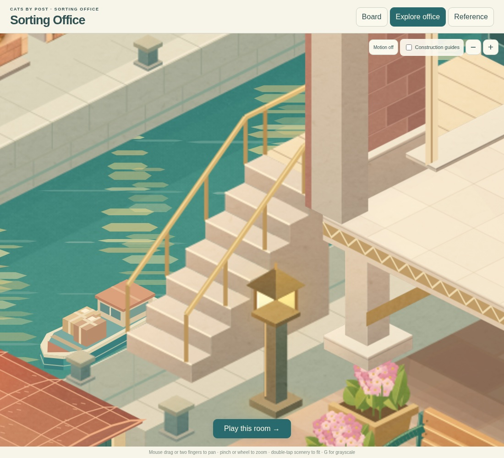
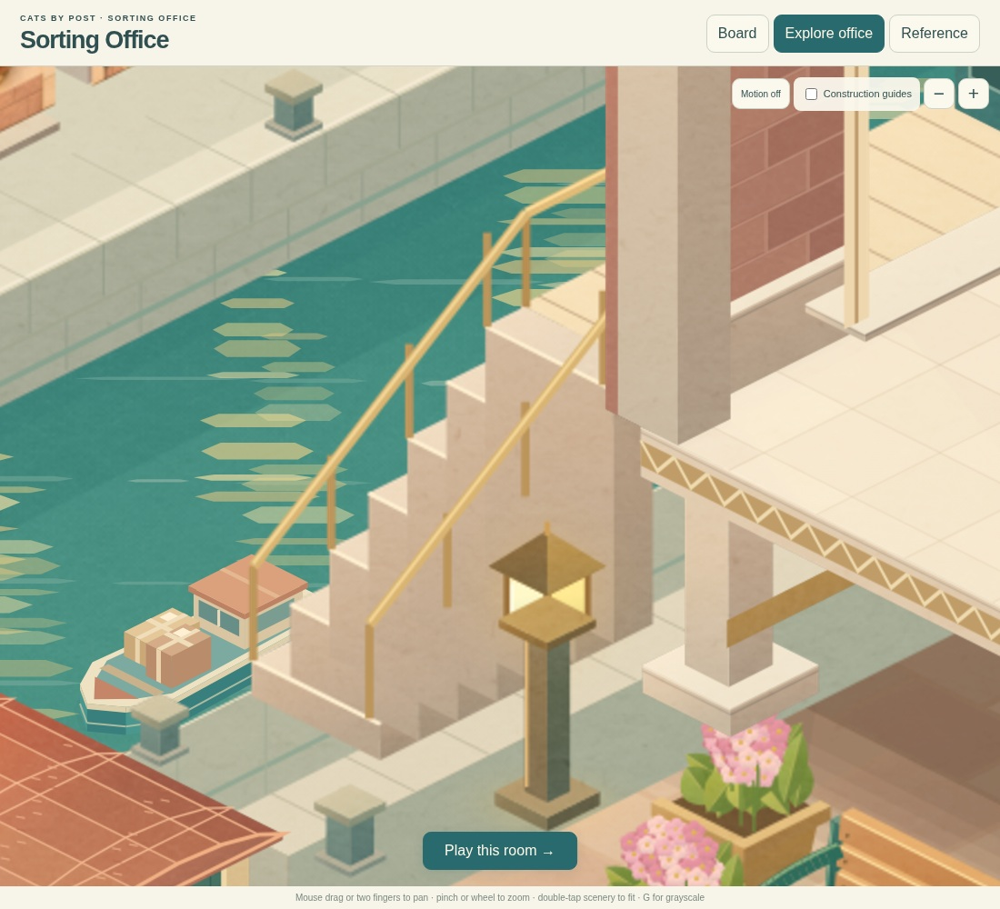

Connected steps and handrails
The uprights now sit on the treads and meet the handrail. The slope levels off at the final tread, joining the landing rail. A continuous stair body removes the false edges and floating-looking posts.

Corrected: connected rails and a continuous flight.
Before: the handrail slope missed the post tops, and internal faces painted across the lower steps.